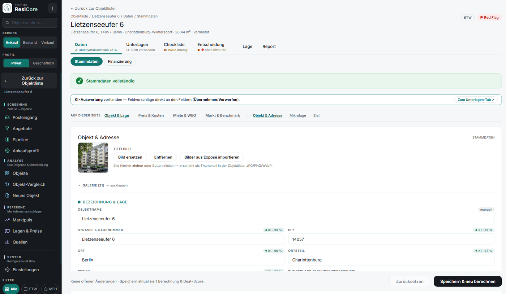
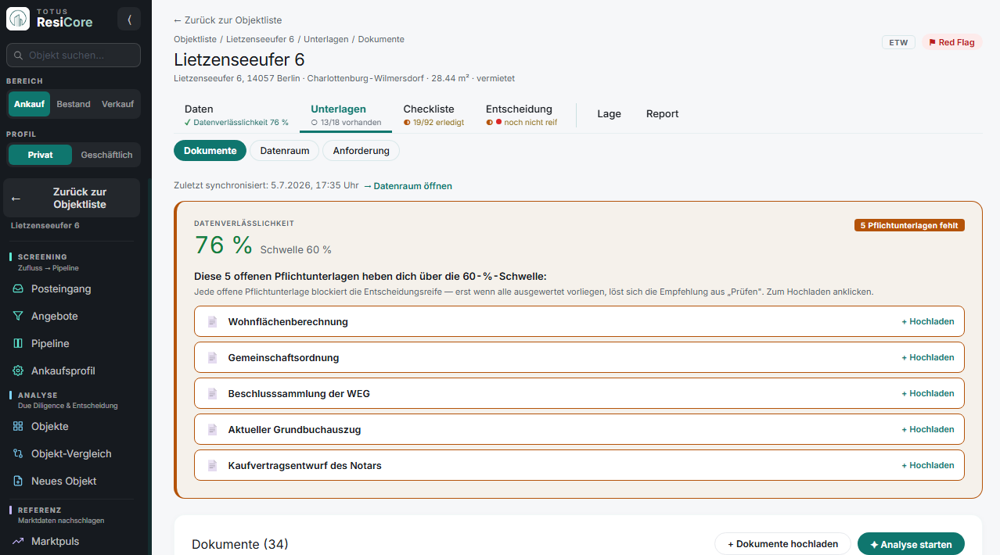
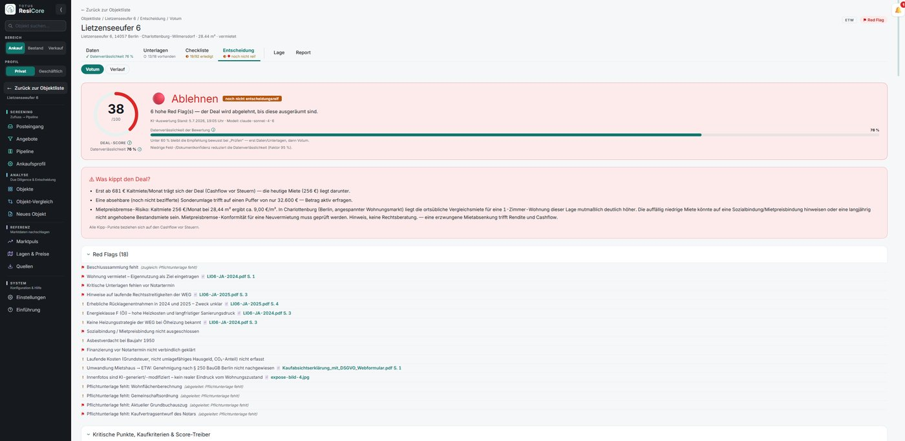

Referenz aus dem TOTUS Portfolio

TOTUS ResiCore
Die Entscheidungsmaschine für Wohnimmobilien: vom täglichen Marktscan bis zum Exit. Regelbasiert, transparent und deterministisch gerechnet.

Drei Blicke ins System.
Objektakte, Unterlagen und Entscheidung, direkt aus der laufenden Anwendung.


Sechs Module, ein Lebenszyklus.
Vom ersten Angebot bis zum Käufer-Datenraum: alles in einem System.
Markt & Pipeline
Der tägliche Marktscan füllt die Pipeline.
Bewertung & Score
Deal-Score 0 bis 100 aus amtlichen Daten.
Finanzierung, Steuern & Szenarien
Cashflow nach Steuern, 60 Jahre projiziert.
Energie & Risiko
CO₂-Kosten und Risiken vorab simuliert.
Datenraum & KI
Datenraum-Sync, KI-Feldvorschläge und Datenverlässlichkeits-Score je Objekt.
Bestand & Verkauf
Vom Portfolio bis zum Verkaufs-Exposé.
Vom Scan bis zum Exit.
Fünf Schritte: die App schlägt vor, entschieden wird vom Menschen.
Markt beobachten
Täglicher Scan sammelt Angebote in der Marktdatenbank.
Screenen
Das Ankaufsprofil markiert Treffer für die Kanban-Pipeline.
Prüfen
KI-Analyse und Pflichtunterlagen-Checkliste zeigen offene Lücken.
Entscheiden
Deal-Score, fairer Maximalpreis und Investment-Memo dokumentieren alles.
Halten & verkaufen
Portfolio, Rent-Roll und Verkaufs-Funnel bis zum Käufer-Datenraum.
Kennzahlen
Die Software simuliert Steuern und Szenarien. Sie ersetzt keine Rechts-, Steuer- oder Anlageberatung.
Rechnen wir Ihr nächstes Objekt.
Ein kurzes Gespräch zeigt, was ResiCore für Ihr Portfolio leistet.